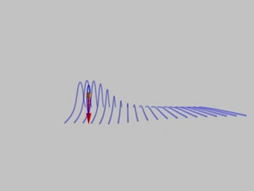
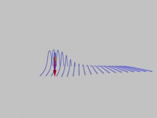

SUBJECT: The Force on a Charge Moving Through a Magnetic Field
DESCRIPTION: These animations show the field and force on a point charge as it moves from a region with no external magnetic field to a region with a constant magnetic field (the field points upwards, or out of the screen in the top view). As indicated by the arrow, the particle feels no force while in the empty region, but feels a varying force in the region of constant external field. A moving charge generates a magnetic field whose magnitude and direction are proportional to the velocity of the charge. Thus, the particle feels maximal force when it is moving fastest through the external field, in the direction given by the cross product of its velocity and the direction of the external field. When it slows to a stop, its field collapses and the force felt reduces to zero. When it starts moving again, in the opposite direction, the force returns. However, since the direction of the velocity has reversed, so has the direction of the force.
VISUALIZATIONS: Perspective view (MPG - 1.8 MB); Top view (MPG - 1.8 MB)